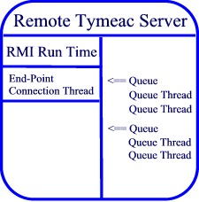
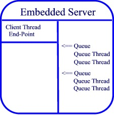

Canceling a Request
It may be necessary at times to cancel an active (a)synchronous request. While you can
cancel the request, you cannot stop the active processing. That is, you cannot force a
thread to stop. For an explanation on why, see the Java API documentation on the Thread.stop() method.
There are three basic Tymeac Server Methods available for Clients:
- shutRequest() --- Shut down the Tymeac Server.
- asyncRequest() -- Request_without_waiting for completion.
- syncRequest() --- Request_with_wait for completion
shutRequest()
Once a shut down sequence begins, there is no way to reverse it.
asyncRequest()
The asynchronous request has three stages of processing:
- In Output Agent stage (after processing all the normal queues.)
- Actively processing in normal queues.
- Not started
When in the Output Agent stage,
you must use the Stalled Request Display/Alter to effect
any changes.
This assumes the request exceeded the allowable time limit and is marked
"stalled." If the Output Agent Processing Application Class hasn't exceed the
time limit, then you must wait until it does. This is a case of trying to stop a thread.
When actively processing or not started,
you may use the Request Status/Cancel Display (or the
non-GUI class) to cancel the request.
If you catch the request before any processing begins, then you may completely remove
the request as if it had never been received.
If the request is actively processing,
then the request is removed from each Queue's Wait List when possible.
The Queue Threads ignore any output from the Processing Application Class and when at
the last application process in the Tymeac Function, the Queue Thread ignores starting the
Output Agent process.
syncRequest() (and use of the cancelSyncReq() method)
This is very difficult for those not intimate with multi-threading. The
good part is even though you may have no idea what is happening after
reading what follows, the examples we
supply work and you may simply clone those for your own use. (We have a
GUI demo too.)
In a Synchronous Request,
the Tymeac Server (Endpoint) Connection Thread is waiting for the Queue
Threads to finish before issuing a return to the calling Client.
Since both the Tymeac Server (Endpoint) Connection Thread and the Client
calling thread are
both in a wait state, we need more threads.
Specifically: you issue a call to the Tymeac Server with a synchronous
request in a thread:
Object[] back = server.syncRequest()
Your client calling thread is now waiting for a response.
On the Server side,
when using RMI, the RMI runtime creates an end-point connection thread
when using the internal server, your client thread is the end-point.


Tymeac schedules your request to one or more Queues (depending on your
requirements.) A Queue Thread, from the thread pool on each
Queue, picks up your request and processes it. The end-point thread then waits for
the Queue Thread[s] to finish.
What "cancel" has to do is have a new client thread communicate with the
server end-point thread that is
waiting for the Queue Thread[s] to finish and tell it to 'wake up and forget about
those other guys.' (the other guys being the Queue Threads)
Simple.
There are two methods for canceling a synchronous request -- a cancel word and call
back. There are two methods because each has drawbacks.
These methods are not mutually exclusive. You may use both in any syncRequest(). You may
execute both at different times and even execute each multiple times (the Server rejects
subsequent requests with an invalid request_id.) There is no TymeacParm constructor using
both. There are TymeacParm setters for each.
Cancel Word
A cancel word is a unique number (long integer) the Client wishes to
associate with a synchronous request. This number must be truly unique for
all active1 requests in the
Tymeac Server. You place the cancel word in the TymeacParm.
When you do a syncRequest(), the Server checks the cancel word against all current synchronous requests
that use a cancel word and rejects the request if it finds
a duplicate. The development of a unique number is only limited by imagination. For the
demonstration classes, we use a random number, method nextLong() in java.util.Random.
You will need one class (com.tymeac.base.CancelParm) in addition to
your normal Tymeac Client/Server classes.
public class CancelParm
// constructor
public CancelParm (long cancel_word)
The color-coded scenario of how this works is as follows:
(green=Client,
pink=NewClientThread,
navy=Server)
The Client places a cancel word long
integer in the cancel word parameter of the TymeacParm
(that is passed to the Tymeac Server.)
The Client must start a
new thread or wake up an
existing thread and pass it the cancel word. It is this
new thread that does
the subsequent cancel request.
The Client calls the Tymeac Server with a
syncRequest(). This causes a wait until complete in the current thread.
The Tymeac Server recognizes the cancel word
object in the TymeacParm and saves the cancel word object in case the Client
later wishes to cancel the call.
... When the Client is ready to cancel the request,
the Client calls its new thread
The Client's new thread takes the cancel word,
creates a CancelParm Object using the single argument constructor and calls the Tymeac
Server with a
cancelSyncReq(CancelParm)
method.
This method returns immediately with an integer
for your evaluation.
The Tymeac Server treats the cancel request in a
similar way as the time-out logic. First, it wakes up the waiting (Endpoint) Connection
Thread. The time-out logic tries to back-out any request in a Queue that has not started
and returns the result of processing to the Client.
The drawbacks with this method are.
If the cancel word is not unique the original call fails (return code).
-
If the new thread calls the Tymeac Server before the Server is ready to
handle a new request, the secondary call fails.
This can happen when the Server is under stress and the original (Endpoint) Connection
Thread does not get enough CPU time to completely broker the request. The secondary call
receives an invalid cancel word reply. When the original (Endpoint) Connection Thread gets
CPU time, it continues without knowledge of the cancel attempt.
If the cancel word is "misused" there could be a difficult bug
to find. That is, when a thread uses the wrong cancel word to cancel a request
(application A cancels application B's request -- oops.).
Call back solves these problems, but adds a few of its own.
Call Back
This technique uses callback. We have a discussion of callback
in the package along with examples of how to use it. If you are not familiar with callback
or your client is behind a firewall then have a read in the
documentation. This does not apply to the Internal Server.
| N.B. |
When an instance exports a remote object the RMI run time opens a new port on the
machine where calls can be made to the object. (Only one port is open per class.) If you
have several clients exporting remote objects on a machine, then you are going to require
a corresponding level of diligence. |
You will need one interface (com.tymeac.base.InterruptionReady) and
one class (com.tymeac.base.CancelParm) in addition to your normal Tymeac
Client/Server classes.
public interface
InterruptionReady
public class CancelParm
You must write a Class that implements InterruptionReady. The single method is ready().
You may use a separate Class or have your Client implement this interface.
The Tymeac Server executes this method as a remote method call passing the
CancelParm object as a parameter.
client_callback_remote_object.ready(CancelParm)
The ready() method must either start a new thread or wake up an existing thread and
pass the CancelParm Object from the Tymeac Server to that thread. It is this new thread
that does the secondary call to the Tymeac Server to cancel the request.
You must instantiate the implementation class and develop a callback Object.
For remote communication, you must export the remote object
(UnicastRemoteObject.exportObject() is one way).
For the internal server, you may use an instance of the implementation class.
You then place the callback Object in the TymeacParm.
The color-coded scenario of how this works is as follows:
(green=Client,
pink=NewClientThread,
navy=Server)
The Client implements the
ready(CancelParm) method of Interface: InterruptionReady.
The
Client's implementation of the ready(CancelParm) method includes code to either start a
new thread
or wake up a waiting thread. The ready() code must pass the other
thread the CancelParm object "called back" from the Tymeac Server
(see below in the Server method: callback.ready() ).
The Client exports a remote object of the
InterruptionReady Implementation Class,
callback =
(InterruptionReady)UnicastRemoteObject.exportObject()
(This exporting step is not necessary for the Internal Server.)
The Client places a reference to the callback
remote object in the callback parameter of the TymeacParm
(that is passed to the Tymeac Server.)
The Client calls the Tymeac Server with a
syncRequest(). This causes a wait until complete in the current thread.
The Tymeac Server recognizes the callback
InterruptionReady object in the TymeacParm and issues a call back to the Client when it is
"ready to handle another request". The call creates a CancelParm
object
containing the current session_id and request_id.
This guarantees uniqueness2.
// call back
callback.ready(new CancelParm(session_id, request_id));
The Client's new thread takes the CancelParm
object from the above callback.ready()
and saves it for when the Client wishes to cancel the original request.
... When the Client is ready to cancel the request,
the Client calls its new thread
The Client's new thread uses the CancelParm object
and calls the Tymeac Server with a
cancelSyncReq(CancelParm)
method.
This method returns immediately with an integer for your evaluation.
The Tymeac Server treats the cancel request in a
similar way as the time-out logic. First, it wakes up the waiting (Endpoint) Connection
Thread. The time-out logic tries to back-out any request in a Queue that has not started
and returns the result of processing to the Client.
The drawbacks with this method are.
It requires substantial work in the Server to call back the Client. (The
call back is done in a new, internal asynchronous request since the call back may result
in a blocking state.)
For remote communication this involves an RMI invocation in the other
direction with all the problems of networks, ports, security, added traffic, etc.
If the Client is not Java then this method is unavailable An example is
IIOP and IIOP with the Portable Object Adapter.
It is more complex then using a cancel word with Clients having to
implement an interface, provide call back code that executes in a thread outside their
image and all the problems of being a Server (RMI or local).
Yes, it is confusing even with colors and links. We provide an academic implementation
of this logic for both scenarios in the /Source directory. This should make understanding
easier.
Cancel Word:
To make this a little easier, we provide an
AWT GUI.
com.tymeac.demo.TyDemoClientCancel3 is for remote method calls using
an external thread
(com.tymeac.demo.TyDemoClientCancelThread3Thread).
com.tymeac.demo.TyDemoInternalClientCancelled2 is for the internal
server.
Call Back:
com.tymeac.demo.TyDemoClientCancel is for remote method calls using an
internal thread.
com.tymeac.demo.TyDemoClientCancel2 is for remote method calls using
an external thread
(com.tymeac.demo.TyDemoClientCancelThread2Thread).
com.tymeac.demo.TyDemoInternalClientCancelled is for the internal
server.
The classes are already compiled including a stub for the remote method. You can run a
test in the same way you start any Tymeac Client. If the original call to Tymeac returns
before you can issue a cancel, then you must either slow down the processing or increase
the load on the server.
You can slow down the processing in an application by putting in a delay of several
seconds. This is a method we use. (It is the method to use for the Internal Server.) In
one of the Demo classes (Demo1 for Queue AAAA) before it does anything, issue a Try {
Thread.sleep(5000) and catch InterruptedException. The sleep is for milliseconds so the
number of seconds you want it to sleep is multiplied by 1000.
To increase the load on the [remote] Server, DO NOT PUT IN A SLEEP AS ABOVE. Use the com.tymeac.demo.TyDemoT3 class and start many threads, but note
below.
Note: as mentioned above, each call back cancel request
requires a remote object exported on a port. If you run into "port" problems,
then the request containing the callback parm may hang until the system clears.
(Communication parameters are unique for each installation. Solutions naturally depend on
your environment.)
| 1 |
The cancel word is only relevant for a single
request. (i.e. While the request is
active in the Tymeac system.) Once the request has finished,
you may re-use that
number.
|
|
2 |
The session_id is the Tymeac start up time, also known as MilliTime
This number
appears on the startup/shutdown messages as well as the
return message for the asyncRequest().
The request_id is a unique number Tymeac assigns each synchronous request.
Combined, they make the object relatively unique. |
public int cancelSyncReq(CancelParm forCancel)
This method is part of the
TymeacInterface.
You call it using the remote object in the same way as an asyncRequest() or
syncRequest(). The method is synchronous; it returns immediately from the Tymeac Server with a
value as below.
The single parameter is the CancelParm
class.
When using a Cancel Word:
The Client constructs the CancelParm object using the single arg constructor:
CancelParm cp = new CancelParm(cancel_word);
When using a Call Back:
The Tymeac Server constructs the CancelParm object using the two arg constructor:
new CancelParm(session_id, request_id)
The Tymeac Server passes the CancelParm class to the Client when it finds an
InterruptionReady instance in the callback field of the TymeacParm class. The
TymeacParm class is the parameter a Client passed to the Tymeac Server on a syncRequest(). The
Tymeac Server uses a callback function (remote or internal) by executing the ready()
method of the InterruptionReady interface.
callback.ready(new CancelParm(session_id, request_id));
The Tymeac Server executes the ready() method in a new, internal asynchronous request.
Therefore, if this method throws any Exception, then the Client will never get the
callback. The Server logs all exceptions.
The Client executes the cancelSyncReq() method using RMI for remote communication or as
a local call for the internal server.
Return code from a cancelSyncReq() method.
These are public static final integers in com.tymeac.base.CancelParm:
CancelParm.SUCCESSFUL
CancelParm.INVALID_SESSION_ID
CancelParm.INVALID_REQUEST_ID -- You may also get this return
code if you try to cancel a request more than once.
CancelParm.INVALID_CANCEL_WORD
CancelParm.CONNECTION_FAILURE
CancelParm.REMOTE_EXCEPTION
CancelParm.EXCEPTION
|